Конструктор заказов на поставку лекарственных средств от поставщиков
Ниже представлено основное меню подсистемы, раздел Задачи которого отображает схему ее функционирования, а именно:
- импорт прайс-листов поставщиков;
- импорт движений товара в аптеке с формированием списка проданного товара за заданный период и остатков товара;
- на основании полученной информации и удобного и информационно полного отображения ее на экране производится формирование заказов;
- сформированные заказы экспортируются поставщикам в соответствии со стандартами и требованиями каждого поставщика.
Пункт Настройки предназначен для настройки обмена данными с поставщиками и базой данных движения товара.
Разделы Справочники и Документы дают дополнительную информацию.
Раздел Служебная предназначен для начальной загрузи данных в подсистему, а также пополнения и корректировки в процессе эксплуатации.

Подсистема внедрена в 2015 году и успешно работает в аптеках Москвы.

Удаленный ККМ
Данное программное обеспечение предназначается в основном для интернет - магазинов
С левой стороны представлено основное меню подсистемы
Первоначально предполагалось только удаленное пробитие и печать чека на фискальном аппарате.
Содержимое чека набиралось на смартфоне и передавалось на сервер, к которому подключены
Фискальные регистраторы.
Если все фискальные регистраторы заняты, данные становятся в Очередь чеков.
Если хотя бы один аппарат свободен или освободился и подошла очередь, то на нем производится пробитие чека,
информация о котором сохраняется в документе Чеки ФР.
Далее копия чека передается обратно на смартфон продавца с которого он может его распечатать,
подключив микро-принтер или фотографию чека переслать на смартфон покупателя.
Потом задача расширилась.
Сначала потребовалась учетная информация о субъектах и объектах, где эта подсистема будет внедрена, использующих и обслуживающих эту систему,
участвующих во внедрениях и в продажах, с соответствующие отчетностью в налоговых инспекциях, что отражено в разделе Справочники.
Кроме того потребовался диалог между участниками, а также система группового оповещения, что отразилось в разделе Обмен данными
Информация о продаваемой номенклатуре товара, его учете и движении у распространителях, поступающих заказах от покупателей отражена в разделе Оборудование,
а финансовые объекты и финансовые движения в разделе Финансы.
В связи с тем, что обязательность регистрации покупок через кассовые аппараты была отменена, потребность во внедрении этой подсистемы отпала.
Система лицензирования состоит из 3 подсистем:
- API системы регистрации, лицензирования, управления лицензиями и работы с сеансами пользователей
- Подсистема регистрации и лицензирования для пользоватенлей
- Подсистема управления лицензиями
API системы регистрации, лицензирования, управления лицензиями и работы с сеансами пользователей
На самом деле - это не одно API, а несколько. Далее пречислим функциональность каждого.
API регистрации пользователей:
- Регистрация пользователя
- Проверка наличия регистрации
- Изменить данные регистрации
- Удалить данные регистрации
- Восстановить регистрационные данные
API лицензирования программного обеспечения пользователей.
Позволяет работать пользователю с программным продуктом в течении периода времени и правами, определенными лицензией.
- Запрос лицензии
- Изменение данных запроса лицензии
- Удаление запроса лицензии
- Выбрать активные запросы лицензий
- Выбрать активные лицензии>
- Активировать лицензию ключем
- Выбрать продукцию
API управления сеансами.
- Открыть сеанс
- Получить данные сеанса
- Получить параметры
- Регистрировать обращение
- Завершить сеанс
API управления лицензиями.
- Выбрать запросы лицензии
- Изменить данные запроса лицензии
- Выполнить запрос лицензии
- Выбрать лицензии
- Изменить данные лицензии
- Выбрать лицензионные ключи
- Выбрать лицензионный ключ
- Добавить лицензионный ключ
- Изменить данные лицензионного ключа
- Удалить лицензионный ключ
- Выбрать сеансы
- Выбрать пользователей
- Изменить информацию пользователя
- Выбрать продукцию
- Добавить продукцию
- Изменить данные продукции
- Удалить продукцию
- Проверить уникальность ключа
- Выбрать параметры продукции
- Добавить параметр продукции
- Изменить параметр продукции
- Удалить параметр продукции
- Выбрать API продукции
- Выбрать версии продукции
- Добавить версию продукции
- Изменить версию продукции
- Удалить версию продукции
- Завершить не закрытые сеансы
Данные API используются почти во всей программной продукции компании "Ниракс".
Подсистема регистрации и лицензирования для пользоватенлей
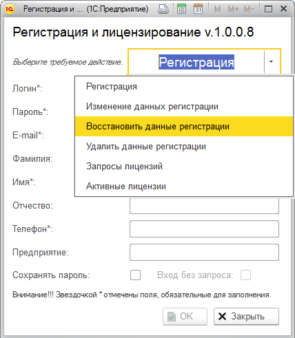
Является внешней обработкой 1C, выполняемой как в обычном, так и в управляемом приложении.
Регистрация
На картинке отображен функционал обработки, а также реквизиты, указываемые при регистрации пользователя.
Пользователь – это не обязательно 1 человек, это может быть группа, например, предприятие. При этом все сотрудники работают как один пользователь.
В этом случае указываются данные ответственного лица.
Если вы не хотите каждый раз при входе вводить логин и пароль, то можно установить галочку: Сохранять пароль.
После того, как данные введены корректно и нажата кнопка ОК, появится сообщение:
Вам отправлено писмо. Для подтверждения регистрации перейдите по ссылке, указанной в письме. Выполнив указанное действие регистрация будет подтверждена.
Изменение данных регистрации.
Если вы ошиблись в персональных данных или они у вас изменились, то можно изменить все персональные данные, кроме логина. Так же можно снять или установить галочку – сохранять пароль.
Восстановить регистрационные данные.
Если вы забыли пароль или не смогли подтвердить регистрацию то можно указав логин и E-mail – получить письмо с паролем и, при необходимости, ссылкой на подтверждение регистрации.
Удалить данные регистрации.
В любой момент Вы можете удалить свои регистрационные данные. Однако, при этом, все имеющиеся у вас лицензии пропадут, даже если вы повторно зарегистрируетесь с этим же логином.
Запросы лицензий.
Для этого в форме запроса лицензии достаточно нажать кнопку добавить и выбрать необходимый программный продукт. После этого необходимо связаться с техническими специалистами компании
Обычно клиентские лицензии подключаются на платной основе. Если Вам требуется работать одновременно нескольким пользователям, достаточно приобрести лицензии на необходимое количество пользователей (лимит). Кроме того вы можете взять программный продукт в аренду на любой срок
Активные лицензии.
Эта форма вам предоставит информацию о том, на какие программные продукты и на какой срок у вас имеется лицнзия, на какой лимит одновременной работы пользователей она расчитана и сколько пользователей работают в текущий момент по каждой лицензии,
а также можете отобрзаить более полную информацию о текущих сеансах, и в случае, если есть незавершенные (зависшие) - завешить их.
Если лицензию вы получили в виде файла, содержащий ключ активации, то вы можете ее активировать выбрав файл с ключом или введя ключ вручную. При этом в списке появится продукт, лицензию на который вы активировали.
Подсистема управления лицензиями
Является внешней обработкой 1C, выполняемой как в обычном, так и в управляемом приложении и предназначена для управления лицензиями и программной продукцией
Ниже представлена шапка формы, на которой отображены вкладки определяющие объекты управления.
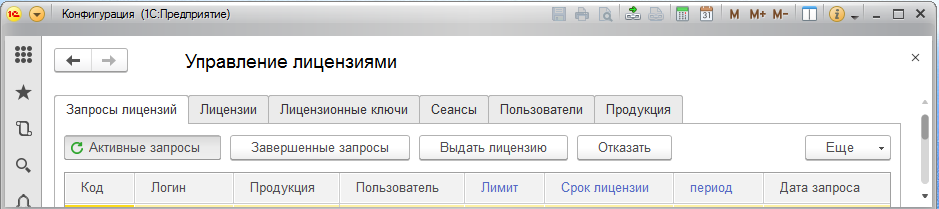
- Запросы лицензий - эта вкладка содержит запросы на лицензии от пользователей, которые еще не были обработаны.
Оператор может скорректировать сроки лицензии, лимит на количество пользователей,
выдать лицензию или отказать, указав причину отказа.
Здесь же можно посмотреть обработанные запросы, нажав кнопку Завершенные запросы. Этот список содержит как
удовлетворенные запросы, так и отказы и причины отказа.
- Лицензии - содержит список всех выданных лицензий и их текущее состояние. Оператор может активировать или деактивировать лицензию, продлить ее срок, изменить лимит пользователей
- Лицензионные ключи - содержит список всех сформированных лицензионных ключей. Используя лицензионный ключ пользователь может сам активировать свою лицензию.
Оператор моожет создать или удалить лицензионный ключ, вывести его в файл и выдать пользователю.
- Сеансы - содержит список текущих сеансов по всем пользователям. Оператор может завершить любой текущий сеанс, просмотреть прошедшие сеансы за любой период.
- Пользователи> - содержит информацию о пользователях, но не содержит пароль пользователя.
- Продукция - содержит информацию о программной продукции и позволяет вносить информацию о ней.
Так как информацией о продукции занимаются разработчики, то для них имеется отдельно обработка
Управление софтом, содержащая весь функционал вкладки Продукция. Ниже отображена часть шапки этой обработки.
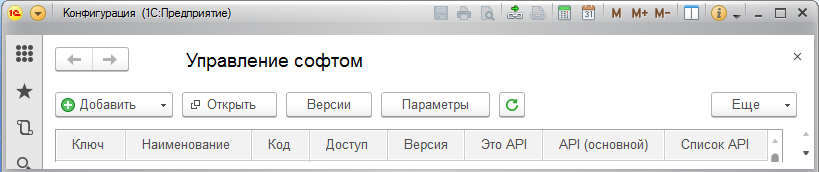
- Ключ, Наименование, Код - реквизиты идентифицирующие продукцию.
В системе предусмотрено, что одна продукция может содержать в себе несколько подсистем,
лицензирование которых производится отдельно. Эта подчиненность отображается в колонке ключа в виде дерева.
- Доступ - число от 0 до 255, определяющие минимальный уровень доступа пользователя для использования этого программного обеспечения.
- Версии - отображает номер последней версии софта. В системе предусмотрено ведение информации по версиям, с которой можно работать, нажав кнопку Версии.
- Это API - признак, идентифицирующий, что это API.
- Список API
- содержит список API, используемое софтом на которое требуется разрешение (лицензия или код доступа). Одно из этих API должно быть основным.
- Не лицензируется - признак, определяющий, что данный программный продукт не требует лицензирования.
- Только лицензия - признак, определяющий, что данный программный продукт без лицензии в демо-режиме работать не будет.
- Параметров - количество внешних настроек программного обеспечения, которые теоретически могут меняться, например при изменении url-адресов и т.п. Предусмотрена индивидуальная настройка на пользователя, т.е привязка к пользователю конкретного значения параметра.
- Бесплатно - определяется на сколько дней выдается бесплатная лицензия, после первого вызова этого софта.
Автозапчасти содержат в себе несколько подсистем:
API кроссы автозапчастей.
Предназначена для поиска и подбора автозапчастей для автомобилей. Ниже приведен перечень функций.
- Получить производителя по коду
- Получить производителей
- Получить модель по коду
- Получить модели по коду производителя
- Получить данные по продукции
- Получить продукцию по поисковому номеру
- Получить продукцию узла
- Получить данные по запчасти
- Получить свойства (атрибуты) запчасти
- Получить список картинок запчасти
- Получить штрих-коды запчасти
- Получить запчасти продукции
- Получить запчасти автомобиля
- Получить аналоги запчасти (по коду)
- Получить запчасти по артикулу
- Получить запчасти по поисковому номеру
- Получить поисковые номера запчасти
- Получить автомобиль по коду
- Получить применяемость запчасти
- Получить автомобили по коду модели
- Получить автомобили по коду двигателя
- Получить автомобили с учетом разной комплектации двигателями по коду запчасти
- Получить автомобили по VIN номеру
- Получить двигатель по коду
- Получить двигатели по коду производителя
- Получить двигатели автомобиля
- Получить двигатели по номеру двигателя
- Получить дерево узлов
- Получить типы дерева
Помощник автобизнеса
Помощник автобизнеса представляет собой внешний модуль (внешняя обработка), который позволяет интегрировать в ваше решение на базе 1С Предприятие 8 каталог Кроссы, прайс-листы поставщиков в формате .xls или .xlsx, а также онлайн поставщиков, сайта которых имеют API интерфейс (свыше 50)
Предусмотрена работа модуля в следующих конфигурациях:
- Альфа-Авто 4.1, 5.0, 5.1 (Автосалон+Автосервис+Автозапчасти);
- Далион: Авто-маркет 1.3; Далион: Авто-бизнес 1.3;
- Розница 2.1; розница магазин автозапчастей 2.1;
- УПП 1.3; ERP 2.0; Комплексная автоматизация 1.1;
- Управление торговлей 10.3, 11.1 - 11.4; УТП 2.0 Казахстан.
Модуль будет работать и в других конфигурациях, однако возможно потребуются небольшие доработки.
Основные функциональные возможности
- Поиск автозапчастей по базе Кроссов (неоригиналы)
- Поиск автозапчастей по базе 1С
- Поиск автозапчастей по маркам, моделям и комплектациям автомобилей
- Создание карточки товара в 1С на основе данных из Кроссов (аналоги, характеристика, применяемость, картинки)
- Поиск автозапчастей по маркам автомобилей по базе Автодилер
- Подключение неограниченного количества прайс-листов поставщиков
- Настройка уровней цен для прайс-листов
- Работа с онлайн поставщиками (просмотр результатов поиска по сайту, отправка заказа в личный кабинет на сайт)
- Формирование отгрузочных документов в 1С:Предприятие (Заказ покупателя, Реализация товара, Счет-фактура, Чек ККМ).
- Формирование документа Заказов поставщику в 1С:Предприятие
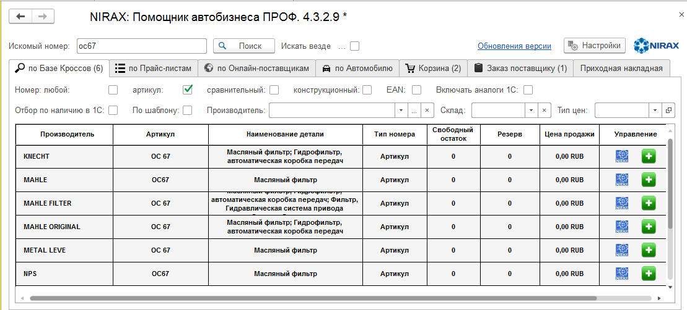
По всем вопросам обращайтесь в компанию "Ниракс"
Помощник автобизнеса online (PHP)
Данный вариант программного обеспечения разработан в основном на PHP c использованием API лицензирования и кроссов.
Основное назначение - поиск автозапчастей по широкому спектру поисковых реквизитов:
номеру запчасти, марке, модели и комплектации, вин-номеру автомобиля, номерам двигателей.
Данная разработка выполнена для компании Ниракс на сайте которой вы можете ознаеомиться детальней с этим продуктом.
На использование api Cross дается временная лицензия, по истечении которой информация будет ограничена (режим демо).
Поиск автозапчастей online (JS и Angular)
Это два идинтичных варианта программного обеспечения разработаны на JavaScript и Angular,
разработанных с целью закрепить знания по HTML, CSS, JS, Angular, TypeScript, WebAPI.
Данные разработки полностью выполнены мной и принадлежат лично мне.
Думаю посмотреть будет интересно, особенно если у вас есть свой автомобиль.
На использование api Cross дается временная лицензия,
по истечении которой информация будет ограничена (режим демо).
Вы можете ознакомиться с работой, написанной на JavaScript непосредственно тут
Подсистема - интерфейс между АСУ ТП на базе системы Скада и 1С
На самом деле это универсальная система, которая может быть функционально объединена с любой другой системой для решения задачи доступа и управления данными 1С из других систем
Интегрируется с любой конфигурацией 1С на платформе версий 8.2 и 8.3
Функционально состоит из следующих элементов:
- справочник функций;
- конструктор функций;
- система тестирования функций
- модуль обмена и управления данными.
Принцип работы следующий.
- В 1С, с помощью конструктора функций разрабатываются и отлаживаются функции, позволяющие выполнять требуемые действия по доступу и управлению данными.
Разработать такую функцию может обычный пользователь, имеющий основные знания по объектам 1С.
- Из другой системы (в данном случае Скада), через WEB – интерфейс отправляются запросы, содержащие информацию о требуемом действии (методе) над объектом и параметрах действия и объекта.
- Модуль обмена и управления данными принимает этот запрос, считывает необходимые для выполнения запроса данные из справочника функций и выполняет его.
- Результат выполнения через WEB – интерфейс возвращается в другую систему.
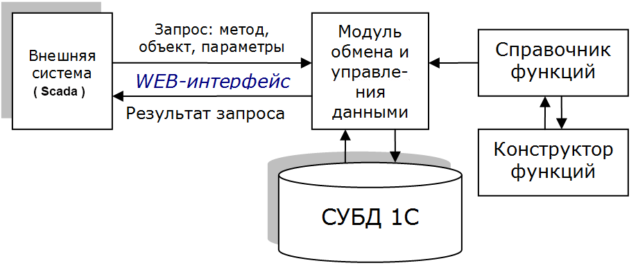
Запросы
В настоящее время работают следующие методы оператора запроса:
- GetList – прочитать список функций. Данные об объекте отсутствуют.
- Get – Прочитать – позволяет прочитать данные о функции.
- Run – Выполнить – выполняет функцию с заданными параметрами
Конструктор
Визуально область формы конструктора разбита на три части.
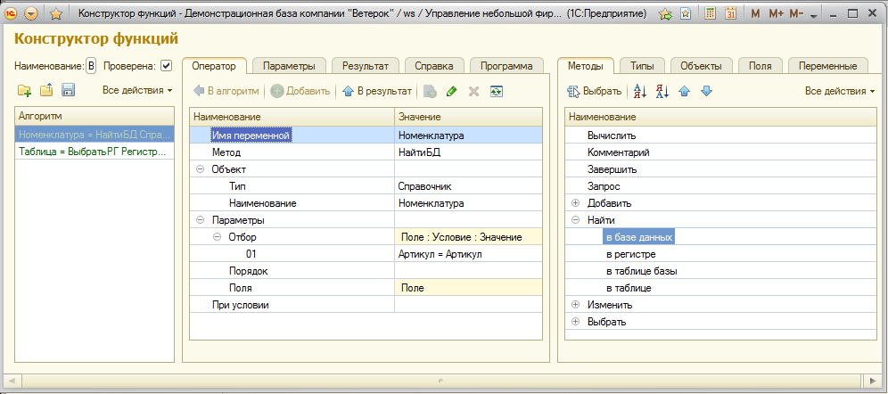
Левая часть содержит текст функции.
Строки текста функции можно набирать непосредственно, особенно при наборе комментариев и вычислений.
Но для остальных методов удобней набирать текст на вкладке оператор, расположенной на средней части экрана.
Средняя часть состоит из вкладок:
- оператор – текст текущего оператора функции, представленный в виде дерева;
- параметры – в данную таблицу разработчик вносит данные о полях параметров;
- результаты - в данную таблицу разработчик вносит данные о возвращаемых функцией результатах;
- справка – предназначена для внесения справочной информации о разработанной функции, кроме того содержит: код функции, дату последнего изменения и имя пользователя, выполнившего это изменение;
- программа – служебная вкладка, содержит текст программы на языке 1С и текст выражения, определяющее условие, при котором она выполняется.
Правая часть содержит вкладки со справочной информацией, упрощающую формирование операторов функции:
- методы – перечень методов, доступных для программирования – представлено в виде дерева,
подчиненные ветви которого уточняют группу типов объектов (суффикс метода);
- типы – содержит типы объектов, с которыми может работать выбранный метод;
- объекты – содержит перечень имен объектов, выбранного типа;
- поля – содержит перечень имен полей выбранного объекта;
- переменные – содержит перечень имен переменных, определенных в функции.
Система тестирования функций.
Для тестирования разработанных функций, имеются два тестировщика – внутренний и внешний.
Внутренний не требует работы через web-интерфейс.
Внешний – это внешняя обработка, работающая через web-интерфейс. Запускать ее можно в любой конфигурации, кроме испытуемой.
При тестировании нужно указать или выбрать: метод, обычно это Run, объект – это имя функции, и заполнить значения параметров. Нажав кнопку выполнить в поле Запрос будет показан сформированный запрос для выполнения, а в поле Ответ – результат, полученный после выполнения запроса.
На внешнем тестировщике имеется дополнительно страница настройки, где указываются логин, пароль пользователя, для входа в 1С и URL web-интерфейса.
Для удобства имеется переключатель, для изменения URL с внешнего адреса на внутренний и обратно.
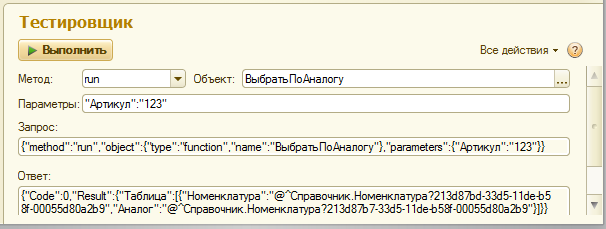
Простейший пример внедрения
Хлеб-завод выпускает хлебо-булочную продукцию, которая выходит из печи по конвееру, при этом датчики системы Скада фиксируют ее количество.
В конце смены система скада передает в 1С список кодов и количество выпущенной продукции, а 1С при этом формирует документ отчет производства за смену и автоматически его проводит.
Подсистема - интерфейс между AMO CRM и 1С
Подсистема предназначена для синхронизации данных между системами 1С Предприятие и CRM интернет системой "amoCRM".
Подсистема представляет собой отдельную конфигурацию, внедряемую внутрь базовой конфигурации пользователя. При этом базовая конфигурация не меняется, а поддержка обеих конфигураций осуществляется обычным образом.
Минимальные требования для работы подсистемы:
- Для связи с системой "amoCRM" на компьютере с 1С:Предприятие 8, обязательно должен быть доступ к сети Интернет.
- Релиз платформы 1С:Предприятие 8 не должен быть ниже 8.3.3.
Ограничений на версию базовой конфигурации пользователя и основной режим запуска (обычное или управляемое приложение) – нет.
Основные функциональные возможности:
- загрузка, изменение информации по компаниям, контактам и сделкам из amoCRM в 1С :Предприятие,
т.е. создание, изменение карточек контрагента (партнера), контактного лица контрагента (клиента),
заказа покупателя (клиента) и других объектов 1С (договор с контрагентом, соглашение, ...);
- загрузка, изменение информации по компаниям, контактам и сделкам из 1С в amoCRM;
- анализ изменений сделок в 1С по оплатам и отгрузкам и другим параметрам, определяющих их состояние и определение и установка соответствующих этапов сделок в amoCRM;
- гибкая система настройки обмена;
- формирование своих правил обмена как для объектов 1С, так и для объектов amoCRM;
- модификация правил синхронизации с учетом добавления новых и изменения текущих параметров объектов amoCRM и 1С;
- система отладки правил обмена с фиксацией ошибок и информировании о них;
- выборочная синхронизации данных как в 1С, так и в amoCRM с возможностью предварительного просмотра этих данных;
- выполнение синхронизации как ручным способом, так и регламентным заданием;
- возможность написания своего функционала, расширяющего встроенные возможности подсистемы, не внося изменения в конфигурацию.
Для реализации всех этих возможностей требуется серьезная настройка системы, которая происходит в несколько этапов, определяемые вкладками формы:
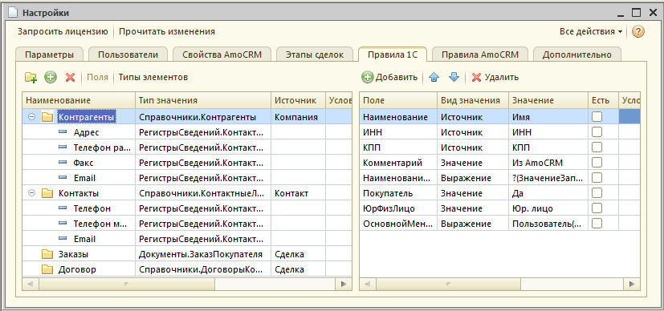
- Параметры - содержит параметры идентификации администратора подсистемы, лицензия, ключи и адреса доступа к amo-CRM,
разрешения на создание, обновление объектов в amo-CRM и в 1С, и использование средств отладки
- Пользователи - список пользователей amoCRM. Этих пользователей можно сопоставить пользователям 1С – указав их в колонке "Пользователи".
- Свойства amoCRM - содержит информацию о полях. Содержимое этой вкладки формируется полностью автоматически.
Однако, для удобства пользователей имеется возможность изменять значения в колонках "Наименование" и "Ключ"
- Этапы сделок содержит воронки и этапы сделки для каждой воронки.
При передачи новых сделок из 1С в amoCRM "условие" определяет в какую воронку ее поместить.
Например, можно определять разные воронки для поставщиков и покупателей, юридических и физических лиц, типу условий продаж и т.п.
Изменение воронки уже для существующих сделок этим механизмом не предусмотрено.
Расчет этапа сделки для amo-CRM производится также по условию
При заполнении полей, содержащие условия или выражения по кнопке выбора предлагается выбрать выражение из справочника выражений (библиотека выражений). Если подходящих выражений нет, то можно написать свое выражение.
- Правила 1С - определяют какие объекты 1С будут создаваться и обновляться на основе данных amoCRM.
Каждая строка правил описывает отдельный объект 1С.
- Правила amoCRM - определяют правила расчета значений свойств каждого типа объекта amoCRM на основе дынных объекта 1С
- Дополнительно - содержит дополнительный функционал:
Выгрузка загрузка правил и выражений Если конфигурация системы 1С была предусмотрена при разработке, то правила 1С автоматически загрузятся.
Если же правила отсутствуют или имеют серьезную специфику и отдельно разрабатывались, то имеется возможность автономной загрузки их из файла.
Функции Амо - если для формирования выражений, не хватает стандартного функционала подсистемы,
то имеется возможность разработки своего дополнительного функционала, который размещается во внешней обработке.
В выражениях, перед вызовом таких функций требуется поставить знак "=".
Если вам требуется дополнить этот функционал вы можете выгрузить эту обработку из системы, скорректировать, а потом снова загрузить.
После загрузки скорректированный функционал сразу будет работать.
 План обмена. Изменения в 1С регистрируются через план обмена.
Если возникла необходимость посмотреть: попадают ли требуемые изменения в подсистему, можно воспользоваться данной клавишей
План обмена. Изменения в 1С регистрируются через план обмена.
Если возникла необходимость посмотреть: попадают ли требуемые изменения в подсистему, можно воспользоваться данной клавишей
Регламентные задания.
Для автоматического выполнения обмена данными используется регламентное задание: Обмен данными.
Вы можете определить от какого пользователя будут они выполняться, настроить расписание, включить или отключить выполнение регламентного задания,
выполнить однократный запуск регламентного задания, для файловой конфигурации можете запустить обработчик регламентных заданий.
Имеется возможность запуска дополнительного регламентного задания, которое проверяет наличие удаленных объектов в amoCRM
и помечает на удаление соответствующие объекты в справочника объектов amoCRM.
Использование данного регламентного задания необязательно и чаще всего выполняется вручную, используя Сервис справочника объектов amoCRM.
Прочитать изменения. Данная функция используется для отладки правил обмена данными и для выполнения обмена данными вручную, выполняя отдельные этапы регламентного задания .
Выполнение регламентного задания производится в следующей последовательности;
Этап 1. Производится чтение объектов amoCRM измененных после даты последнего обновления (см. настройки – параметры – дата обновления);
Этап 2. Производится чтение измененных объектов 1С (данные из плана обмена) , расчет значений полей amoCRM в соответствии с правилами, если объект amoCRM уже существует - сравнение с текущими значениями и если отличны – включение в таблицу изменений полей. Если рассчитанные и текущие значения полей полностью совпали – объект не включается в таблицу изменений.
Этап 3. Производится обмен данными из 1С в amoCRM на основании данных таблицы, полученной на этапе 2.
Этап 4. Из данных таблицы, полученной на этапе 1, производится расчет данных 1С в соответствии с правилами, сравнение с текущими значениями реквизитов объектов 1С и в случае их различия – изменение значений (обмен данными из amoCRM в 1С).
Форма Изменения содержит две вкладки: Объекты AmoCRM – позволяет выполнять этапы 1 и 4 регламентного задания и Объекты 1С – позволяет выполнять этапы 2 и 3 регламентного задания.
Для выполнения этапа 1 и 2 на каждой вкладке существует кнопка "Прочитать", после нажатия которых формируется соответствующая таблица данных для обмена.
Кроме функционала вкладка Дополнительно содержит перечень объектов подсистемы, доступ к которым вы можете получить через стандартные формы 1С.
Часть из этих объектов мы уже рассмотрели, поэтому перечислим остальные:
- АмоОбъекты - содержит перечень объектов amoCRM. Этот справочник очень важен, поэтому вызов его предусмотрен в командной строке формы.
Он позволяет:
- вручную связать или разорвать связь объекта amoCRM с объектом 1С;
- очистить дату изменения объекта, для обновления объекта 1С из amoCRM;
- прочитать свойства объекта amoCRM непосредственно с сайта (кнопка – прочитать);
- удалить из справочника удаленные объекты amoCRM (кнопка - сервис);
- отобразить дубликаты объектов amoCRM, когда разные объекты amoCRM связаны с одним объектом 1С, что не допустимо,
при этом эти объекты обновляться не будут. Для устранения этой ситуации нужно в ручную убрать лишние связи,
дубликаты объектов amoCRM удалить на сайте, а потом удалить их из справочника объектов amoCRM.
- АмоСоставОбмена – регистр сведений источники состав обмена - предназначен для управления регистрацией изменений объектов 1С,
определяет при изменении каких объектов какой тип объекта АМО изменяется и в каком реквизите расположены данные о соответствующем объекте 1С
- АмоИзменения1С - Регистратор изменений в 1С - регистрирует изменения в 1С для последующей синхронизации данных в amoCRM.
Изменения, зарегистрированные в плане обмена, на основании данных регистра АмоСоставОбмена, проходят преобразование в базовые объекты 1С
и записываются в регистратор изменений. Перед выполнением синхронизации производится расчет новых значений соответствующего объекта amoCRM.
Если данные этого объекта не изменились, запись об изменении удаляется из регистра сведений, иначе выполняются изменения объекта amoCRM и,
в случае успешного обновления данных, запись об изменениях также удаляется.
- АмоИзмененияСвойств – регистр сведений журнал изменения свойств amoCRM – в этом журнале регистрируются изменений данных аккаунта:
пользователи, поля и свойства объектов, воронки, этапы сделок. Дата последнего обновления данных аккаунта указывается в параметрах.
- АмоЖурналОбновлений - журнал обновлений объектов 1С и amoCRM – в данном регистре сведений регистрируются все обмены данными между 1С и amoCRM в соответствии с правилами.
- АмоОшибки - журнал ошибок в котором регистрируются ошибки программы, произошедшие при выполнении обмена данными.
Чаще всего эти ошибки происходят из-за некорректного описания правил.
Рекомендуется просматривать данный журнал и при появлении ошибок принимать меры к их устранению, вплоть до обращения к разработчику.
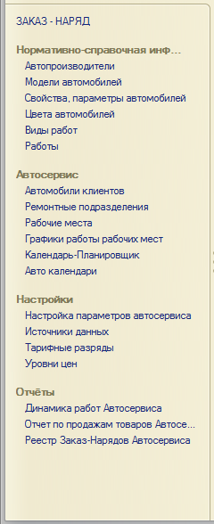
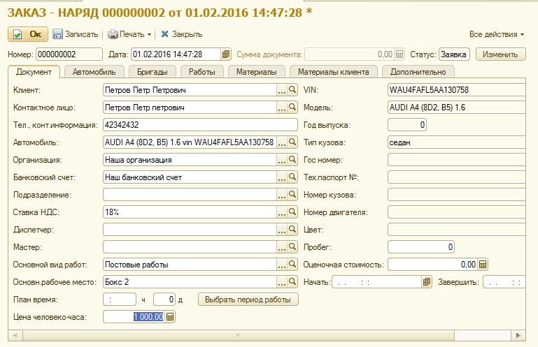
Подсистема Автосервис
Подсистема представляет собой конфигурацию-расширение для таких решений, как УТ11, УТ 10.3, КА.
Данная подсистема позволяет вести учет ремонта автомобилей, планировать трудовые и материальные
затраты на выполнение ремонтных работ с учетом расчета норм времени на их выполнение
Основным документом подсистемы является Заказ-наряд.
Для работы с этим документом требуется целый комплекс данных, которые определены в меню подсистемы, расположенной слева.
- Раздел «Нормативно-справочная информация» содержит разнообразную информацию об автомобилях и работах проводимых при их ремонте и техобслуживании, включая нормативные данные.
- Раздел «Автосервис» содержит информацию о структуре и режиме работы автосервиса и автомобилях клиентов.
- Раздел «Настройки» позволяет настроить систему для конкретного предприятия.
- Раздел «Отчеты» - позволяет формировать отчетную информацию по работе автосервиса за период времени>
Заказ наряд имеет свой жизненный цикл и укрупненные этапы определяются статусом документа.
Статус заявка.
- начальное заполнение документа - диспетчер вносит учетную информацию о клиенте и автомобиле (Вкладки Документ и Автомобиль: причина обращения);
- осмотр, диагностика автомобиля – мастер вносит уточненную информацию об автомобиле с учетом комплектации и информации о нем в различных нормативных каталогах;
- определение перечная работ (вкладка Работы), и на основании расчета норм – времени и стоимости работ;
- определение требуемых материалов (вкладка материалы), внесения информации о материалах, предоставляемых заказчиком, наличия материалов на складе, при отсутствии возможно проценить материал и даже сделать онлайн - заказ, с согласованием его с отделом поставки, оформить требование-накладную на получение материалов;
- на основании полученной информации и графика работ автосервиса по рабочим местам и исполнителям определить место работ и исполнителей (выбрать период работы), дату начала и завершения работ;
- при передаче транспортного средства в работу на вкладке Автомобиль с целью не допущения в будущем претензий заказчика заполнить комплектность авто (наличие или отсутствие приемника и т.п.) и не устраняемые дефекты (дефекты, которые имеет автомобиль, но заказчик не планировал их устранять) , оформить и подписать акт приемки-сдачи транспортного средства и заказ-наряд.
Статус В работе:
- передача работ и материалов в бригады:
- прием работ от бригады, получение от бригад информации об исполнителях и их КТУ.
Статус Выполнен: ожидает отгрузки.
Статус Завершен: прием работ клиентом и закрытие заказ – наряда.
Статус Отменен: полная отмена заказ - наряда.
Полностью не решены вопросы:
- прием работ у бригад с привязкой к работе;
- передача в работу внешнему исполнителю;
- прием из работы от внешнего исполнителя;
- изменения заказ – наряда;
- возврат неиспользованных материалов на склад.
Подсистема Nirax-online ( интернет - консультант + мессенджер предприятия )
Подсистема «Nirax-online» представляет собой отдельную конфигурацию (сервер приема и отправки сообщений),
внедряемую внутрь базовой конфигурации пользователя или существующей самостоятельно + внешняя обработка
для работы с диалогами в различных типовых конфигурациях 1С + виджет для размещения на сайт компании.
При внедрении в базовую конфигурацию, она не меняется, а поддержка обеих конфигураций осуществляется обычным образом.
Подсистема «Nirax-online» предназначена для ведения диалога между потенциальным клиентом (далее посетителем) и
оператором-консультантом (оператором), а так же возможностью общения работников компании между собой.
Связь осуществляется со стороны посетителя через страницы сайта компании или
мессенджеры социальных сетей: Telegram, VK (В контакте),
Facebook, Viber и
со стороны оператора через внешнюю обработку 1С любой конфигурации.
Связь с оператором осуществляется с учетом тематики страниц сайта, к примеру компания занимается производством и ремонтом,
поэтому по вопросам ремонта отвечают одни операторы, по вопросам производства другие, по вопросам трудоустройства - третьи, и так далее.
В случае, если оператор не может ответить на поставленный вопрос, он может связаться с другим оператором для получения консультации
или переадресации диалога, причем в случае переадресации информация диалога доступна другому оператору.
Настройка подсистемы осуществляется пользователем, имеющим полные права через Администратор диалогов.
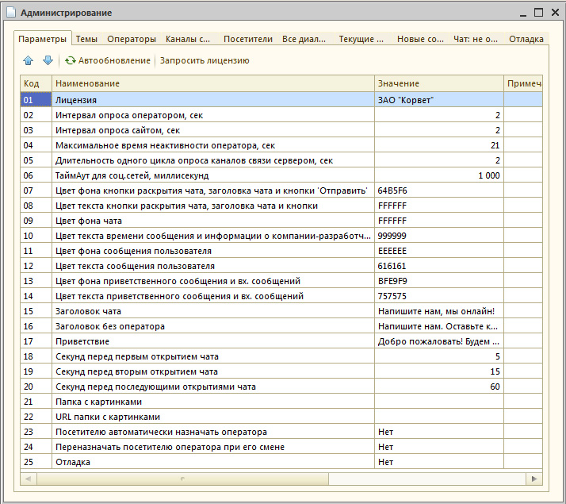
На первой вкладке определяются значения параметров функционирования подсистемы.
Вкладка "Темы" содержит перечень тематик, которыми занимается организация и которые отражены на страницах сайтов.
Справочник "Темы" позволяет определять тематику страниц сайтов, тематику работы операторов.
При добавлении задается только наименование темы. Заполнение этого справочника не обязательно.
Вкладка "Операторы" содержит список пользователей, которым разрешена работа с диалогами (оператором).
При добавлении задается пользователь, его имя, устанавливается признак "Использовать темы",
если он работает только по конкретными темам и, соответственно, требуется отметить используемые темы.
Кроме того, можно указать приветствие, которое будет автоматически отображаться посетителю, при принятии диалога оператором.
Можно загрузить фотографию оператора, она должна быть квадратной, иначе будет деформация изображения.
Имя и фотография оператора отображаются в заголовке чата при принятии диалога.
Вкладка "Каналы связи" отображает справочник страниц социальных сетей и сайтов предназначена для настройки связи
Остальные вкладки для настройки не используются и содержат следующую информацию:
- Посетители – справочник посетителей через социальные сети и сайты - ведется автоматически;
- Все диалоги – содержит все диалоги посетителей с операторами;
- Текущие диалоги – содержит текущие не закрытые диалоги;
- Новые сообщения – содержит сообщения посетителей, диалоги с которыми еще не начались;
- Чат: не отправленные – содержит сообщения операторов, которые ждут отправки на сайт посетителю;
- Отладка – содержит диагностическую информацию при выполнении диагностики.
Работа с диалогами
Запуск подсистемы возможен из обычного или управляемого приложения (толстый, тонкий или веб.клиент) и из внешнего соединения.(любое другое приложение 1С).
В результате запуска подсистемы на экран отобразится форма диалога с посетителями.
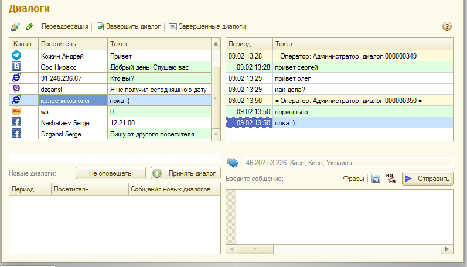
Форма условно разбита на 4 части.
- В левом верхнем углу находится список активных диалогов оператора.
- В правом верхнем углу находится информация как текущего активного диалога,
так и предыдущих диалогов с этим посетителем не зависимо от того, с каким оператором он общался раньше.
При общении через чат идентификация посетителя отсутствует, поэтому для каждого диалога будет новый посетитель с именем равным его ip-адресу.
Сообщения посетителя выделяются зеленоватым фоном и смещением значения времени в колонке "Период" вправо.
При работе через внешнее соединение отображается местное время.
- В нижнем правом углу находится поле ввода сообщений оператором, для общения с посетителем.
Учитывая, что многие посетители задают один и тот же вопрос, оператор может сохранить ответ и в следующий раз выбрать его из справочника фраз.
Если при наборе оператор забыл поменять регистр он может это сделать, нажав клавишу RU/EN.
В процессе диалога можно внести информацию о посетителе, тематике диалога.
Можно связаться для консультации или переадресовать диалог другому оператору.
Когда посетитель пишет ответ, на экране появляется пишущая ручка, сигнализирующая об этом.
- В нижнем левом углу отображаются сообщения посетителей, диалог с которыми еще не начат.
Чтобы начать общение нужно установить курсор на интересующий вас диалог и нажать клавишу "Получить диалог"
( при этом он переместится в верхние таблицы).
Информация в таблице новых диалогов обновляется через интервал времени опроса сервера оператором.
Если вы переместите курсор в эту таблицу – обновления этой таблицы не будут происходить, а в правом нижнем углу будет отображаться информация о поступивших сообщениях. Если Вы хотите постоянно получать такую информацию, например, в данный момент занимаетесь другой работой, нужно нажать кнопку "Оповещать" и при поступлении новых сообщений вы это увидите в нижнем левом углу.
Нажатие кнопки "Не оповещать" – отключит этот режим.
Если вы завершили диалог с посетителем, нажмите кнопку "Завершить диалог".
При этом на экран отобразится форма диалога, в которой вы можете уточнить тематику диалога, дать другое имя посетителю, отметить важность диалога, оценить эффективность диалога (от 1 до 9), оставить свои комментарии.
Чтобы посмотреть завершенные диалоги нажмите соответствующую кнопку.
При этом отобразится форма отбора диалогов. Отбор возможен по дате, каналу связи, важности, оценке,
посетителю и теме диалога, При работе с завершенными диалогами можно менять их отбор.
Примечания
Большинство моих разработок написаны на 1С,
но кроме того широко использовались PHP, mySQL.
В последних разработках использую
HTML5, CSS3, JavaScript, Angular, TypeScript, NodeJS, WebAPI,
включая WebSocket, WebRTC.